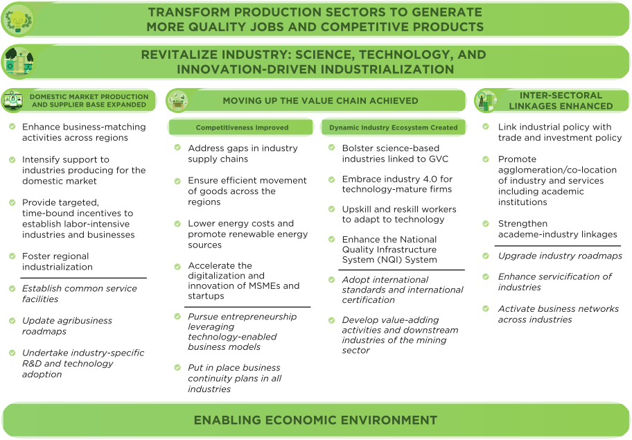

To generate more quality jobs and competitive products, the industry sector will be revitalized by expanding the domestic market and supplier base, moving up the value chain, and enhancing linkages across sectors. Moreover, to drive industrialization forward, accessibility, particularly of micro, small, and medium enterprises, to a dynamic science, technology, and innovation ecosystem will be ensured.
This chapter presents the challenges to revitalizing industry and the outcomes to be pursued to address these challenges during the Plan period. These outcomes are: (a) domestic market production and supplier base expanded; (b) moving-up the value chain achieved; (c) competitiveness improved; (d) dynamic industry ecosystem created; and (e) inter-sectoral linkages enhanced.
Before the coronavirus disease (COVID-19) pandemic, the Philippines had a growing industry despite structural weaknesses. Despite difficulty in attracting foreign direct investments (FDI), restrictions to foreign equity and the lack of advanced science, technology, and engineering skills, industry showed a strong performance from 2010 to 2019, growing at an average of 6.4 percent annually. This growth was driven by robust growth in construction (10.0%); electricity, steam, water, and waste management (5.7%); and manufacturing (5.6%) over the same period.
The imposed lockdowns have wiped away the gains from previous years, resulting in the contraction of the industry sector (-13.1%) with construction (-25.5%) and mining and quarrying (-18.6%) reporting double-digit declines.
Yet, we have seen some bright spots in the midst of the pandemic. Pharmaceutical manufacturers have shown resilience, growing at 5.8 percent in 2019-2020 despite the lockdowns. Electricity, steam, water, and waste management sector also showed a minimal decline of 0.4 percent in 2019-2020 despite prolonged periods of community quarantine.
Businesses have turned to digital tools, especially for marketing and payments during the pandemic, evidenced by the significant growth in e-commerce. Driven by strict lockdowns as well as a tipping point in the adoption of certain digital services, the Philippines' 2021 Gross Market Value (GMV) reached a total of USD17 billion-a notable 93 percent year-on-year (y-o-y) surge. This steep increase is underpinned by a 132 percent growth in e-commerce. In addition, 39 percent of digital merchants believe that they would not have survived the pandemic if not for digital platforms. Digital merchants are reported to have used an average of two digital platforms in that year. 1
In the first half of 2022, economic recovery has become more broad-based as many industry subsectors have surpassed pre-pandemic performance. Electricity, steam, water, and waste management (9.9%) have exceeded pre-pandemic growth. For the manufacturing sector: wood, bamboo cane, and rattan (31.3%); chemicals (29.1%); paper (19.2%); furniture (13.3%); electronics (8.9%); food products (4.9%); and fabricated metals (4.2%) have all reported production expansions higher than their 2019 figures.
Recovery can also be seen in the rebound of employment generation. Employment generated in the industry sector totaled 446,000 in January-May 2022, indicating a high likelihood that the full-year 2022 target of 200,000 will be surpassed given sustained economic growth momentum. Manufacturing contributed about 52 percent to employment generation in industry, followed by construction at 41 percent.
Looking forward to the next 5 years, challenges to industry development remain but also opportunities abound.
Philippine manufacturing continues to have low technology utilization with most companies 2 still transitioning from Industry 2.0 to Industry 3.0. 3 In addition, micro, small, and medium enterprises (MSME) in manufacturing have, at most, low technological readiness for the Fourth Industrial Revolution or Industry 4.0. Most MSMEs admitted that they are not yet ready for revolutionary changes in their organizations, citing top barriers to technology utilization such as the high cost of technologies, lack of infrastructure, absence of skilled employees, and lack of management knowledge. 4
Still, certain industry sectors are already considering adopting modern technologies. Food manufacturers are exploring the applications of artificial intelligence (AI), the Internet of Things (IoT), and synthetic biology (plant-based alternatives for meat products). The Semiconductor and Electronics Industries in the Philippines Foundation, Inc. is also optimistic about the opportunities that will be provided by emerging technologies, such as metaverse, automotive AI, advanced driver assistance systems, and augmented reality. 5
Rapid global inflation is clouding the outlook for sustained manufacturing growth. The Philippine manufacturing sector is projected to take a hit from high global inflation mainly brought about by the prolonged Russia-Ukraine conflict. While domestic demand may have continued to sustain the domestic manufacturing sectors, the rising import cost of inputs and fuel prices, and the slowing down of manufacturing activity in major economies 6 may be a drag on the domestic manufacturing sector. The Purchasing Manager's Index (PMI), declining from 54.1 in May 2022 to 52.6 in October 2022, has already shown indications of slowing manufacturing activity.
The constraint placed by international sanctions on Russian export of cobalt, a key input in the production of batteries, provides opportunities for the Philippine mining and manufacturing industries. The Philippines and Russia have roughly similar amounts of cobalt reserves and fall within the top six country sources of cobalt, after Australia, Cuba, the Democratic Republic of Congo, and Indonesia. Although the Philippines produces nickel-cobalt mixed with sulphide, the opportunity to add value and produce nickel sulphate (needed by lithium ion battery producers) in the Philippines has yet to be taken. Prolonged sanctions on Russian cobalt will likely increase investors' interest in the Philippines. 7
Competitive cost of labor, but lack of skilled workers. The Philippines industry can continue to benefit from the competitive labor cost of the country, as the average engineer's monthly salary in manufacturing is the lowest vis-à-vis Malaysia, Thailand, Vietnam, and Indonesia. 8 However, in order for Philippine firms to adopt new technologies to become more competitive, it is critical to expand their absorptive capacity, which requires developing the appropriate management skills and hiring more technical staff. The availability of scientists and engineers in the country, however, is scored at only 3.8 (out of 7). 9
To generate more quality jobs and competitive products, the industry sector will be revitalized through expanding the domestic market and supplier base, moving up the value chain, and enhancing linkages across sectors (See Figure 6.1). Moving up the value chain can be achieved by improving the competitiveness of industries and by creating a dynamic industry ecosystem. A dynamic industry ecosystem will enable better access of firms, particularly MSMEs, to science, technology, and innovation, which are key drivers of industrialization.

| TRANSFORM PRODUCTION SECTORS TO GENERATE MORE QUALITY JOBS AND COMPETITIVE PRODUCTS | |||
|---|---|---|---|
| REVITALIZE INDUSTRY: SCIENCE, TECHNOLOGY, AND INNOVATION-DRIVEN INDUSTRIALIZATION | INTER-SECTORAL LINKAGES ENHANCED | ||
| DOMESTIC MARKET PRODUCTION AND SUPPLIER BASE EXPANDED Enhance business-matching activities across regions Intensify support to industries producing for the domestic market Provide targeted, time-bound incentives to establish labor-intensive industries and businesses Foster regional industrialization Establish common service facilities Update agribusiness roadmaps | MOVING UP THE VALUE CHAIN ACHIEVED Undertake industry-specific Address gaps in industry supply chains Ensure efficient movement of goods across the regions Lower energy costs and promote renewable energy sources Accelerate the digitalization and innovation of MSMEs and startups Pursue entrepreneurship leveraging technology-enabled business models place business continuity plans in all industries Bolster science-based industries linked to GVC Embrace industry 4.0 for technology-mature firms Upskill and reskill workers to adapt to technology Enhance the National Quality Infrastructure System (NQI) System Adopt international standards and international certification Develop value-adding activities and downstream industries of the mining sector Competitiveness Improved Dynamic Industry Ecosystem Created | Link industrial policy with trade and investment policy Promote agglomeration/co-location of industry and services including academic institutions Strengthen academe-industry linkages Upgrade industry roadmaps Enhance servicification of industries Activate business networks across industries | |
| ENABLING ECONOMIC ENVIRONMENT | |||
An integrated industrial policy approach to expand domestic production and supplier base is critical to achieving inclusive and sustainable growth. This entails enhancing business-matching activities across the regions, intensifying support to industries producing for the domestic market, providing targeted and time-bound incentives to establish labor-intensive industries and businesses, and fostering regional industrialization. These strategies will induce the private sector to work with government in establishing common service facilities, in updating and implementing agribusiness roadmaps, and in undertaking industry-specific research and development (R&D) and technology adoption.
Scale up domestic investment promotion and business-matching activities at the local level. Because of the large coverage of the Negosyo Centers and the variety of services they can provide, the Department of Trade and Industry's (DTI) Negosyo Centers located all over the country will be the avenues for business-matching activities, which would link MSMEs to large enterprises in the regions. The database of Negosyo Centers can also serve as a means for clustering MSMEs to build scale and meet the demands of large enterprises.
Map out value chains across sectors. Government will facilitate the linking of the upstream segments to the downstream segments through capacity development and assistance to meet technical requirements. The experience of the Supplier Development Program of the DTI and BOI in assessing the presence and capabilities of local parts suppliers for automotive, aerospace, and electronics sectors can provide insights for the effective implementation of this strategy.
Provide assistance to expand market share. Manufacturers producing for the domestic market are faced with competition from lower-priced imports that tend to flood the Philippine market and encroach on domestic market shares. To address this, the government hosts provincial and national trade fairs for domestic manufacturers and food processors. Specifically, the One Town, One Product (OTOP) shows, and Go Lokal! concept stores in major malls provide marketing assistance to industries that are producing for the domestic market. To be on par with foreign competitors, businesses are equipped with knowledge, and the right tools to ensure quality and safe production through the Shared Services Facilities (SSF) program, which will be expanded to allow more access points particularly for areas outside the National Capital Region.
Support affordable production for construction. Small-scale real estate developers should consider efforts that are aimed at consolidating their demand for construction materials, especially sustainable construction materials. Such arrangements can help developers overcome the disadvantages posed by the inherent fragmentation and geographical dispersion of housing projects. Furthermore, they benefit from the resulting reduced transport costs, and suppliers' wholesale prices. Demand consolidation will continue to be pursued by the Board of Investment, which has been active in arranging reverse trade agreements among buyers and sellers in the industry, wherein buyers present their needs for certain materials, and arrange for preferential pricing from interested suppliers.
Support for construction and housing will be sustained through fiscal and non-fiscal incentives directed toward housing production confronted with deficits. This includes supporting socialized urban, economic and low-cost housing; developing and implementing information technology (IT) systems that support general operations from amortization collection and marketing; developing globally accepted housing industry standards; and standardizing building components.
Support for health and life science (HLS) will specifically target manufacturing of essential products like personal protective equipment (PPE), surgical masks, and medical testing kits, among others, for the domestic economy. This includes loans for equipment needed in manufacturing hospital-grade PPEs and medical supplies. Technical assistance will also be provided to companies to meet the standards of hospitals. Government support will also be provided for the streamlining of complex rules and regulations affecting business operations of HLS manufacturers.
Agribusiness includes manufacturers of condiments, cacao processing, coffee, mango, pili, dried fruit, banana, and rubber, among others. Through the Strategic Investment Priority Plan (SIPP), fiscal and non-fiscal support will be provided to food processors to enable them to compete against imports from neighbors in the Association of Southeast Asian Nations (ASEAN). SSFs for agribusiness will likewise be expanded and upgraded.
For automotive manufacturing, government support to programs and measures such as the Electric Vehicle Incentive Strategy, which is similar to the Comprehensive Automotive Resurgence Strategy program, will be expanded. These programs help increase the domestic market base. In turn, these industries attain economies of scale, realize their export potentials, and deepen their participation in global value chains. Furthermore, incentives to be given must be well-targeted, performance-based, transparent, and time-bound.
The government will promote and support regional and urban centers specializing in industries where they are most competitive, recognizing the value of the industries in the regions as producers for the local market, and addressing regional growth and development disparities in the country. These can be done by upgrading the OTOP, developing knowledge hubs in each region, and developing platforms that support an innovative culture.
Upgrade the One Town, One Product. The DTI will partner with the National Academy of Science and Technology and the Philippine American Academy of Science and Engineering to improve further the OTOP. DTI regional offices will work with their respective Regional Development Councils (RDC) to advance the implementation of production-based regional development.
Through close collaboration among the Commission on Higher Education (CHED), Department of Science and Technology (DOST), and DTI, at least one state university or college in each region will be selected to serve as the knowledge hub in the region. The chosen university will perform R&D work for enterprises, and train entrepreneurs and enterprise employees, among others. Within the medium term, the state universities and colleges (SUC) in a specific region will be clustered or amalgamated to form a regional university that will serve as a component of the region's inclusive innovation centers (IIC).
Develop platforms to support innovative culture. IICs will be expanded to serve as platforms to promote an innovation culture, accelerate the commercialization of R&D outputs in the regions, equip universities to carry out research relevant to industries, and adopt technology solutions to create intellectual property. In 2019, regional inclusive innovation centers (RIICs) were established in Cebu, Davao, Legaspi, and Cagayan de Oro. More RIICs were added in 2021 to 2022 covering Zamboanga, Batangas, Tuguegarao, Central Luzon, Iligan, Leyte, and Cordillera Autonomous Region. These innovation centers will continue to provide design thinking workshops, and serve as venues for networking and engaging with the academe, industry, and other ecosystem players.
Common service facilities for storage and logistics, such as handling and cold storage services, will be established to help ease the burden of high storage and logistics costs borne by MSMEs. Another service facility that can be provided to MSMEs is the open-access do-it-yourself maker space called Fablabs, which will allow MSMEs to explore the use of digital fabrication. Meanwhile, digital training centers will provide support to MSMEs interested in exploring the use of digital technology. These facilities will be pursued together with the private sector, which will house the facilities and manage access to eligible MSMEs.
The agribusiness and/or commodity industry roadmaps will be upgraded to consider the evolving domestic and international environment. The roadmaps will be aligned with the updated Philippine commodity industry roadmaps released by the Department of Agriculture (DA), as these pertain to the upstream sectors of the food processors and food manufacturers (See Chapter 5).
Support will be provided to the industries' R&D needs to enhance technology adoption and stimulate productivity growth. For instance, the food manufacturing industry makes use of R&D solutions to develop innovative and environmentally-sustainable packing materials, canning techniques, and identification of ingredients with high nutritive value. For the construction companies, R&D solutions include green architecture, additive manufacturing, and safer local construction materials which eventually lead to the expansion and upgrading of construction materials suppliers. The Science for Change Program (S4CP) of the DOST will be expanded to support the industries in their R&D needs (See Chapter 8).
Moving up the value chain is a mechanism for businesses to increase economic activity, become more productive, and provide more jobs. This can be achieved by improving the competitiveness of businesses, particularly MSMEs, and by creating a dynamic industry ecosystem.
The implementation of the manufacturing roadmap will be intensified to address value chain gaps in industry. Over the medium term, the use of sustainable raw materials (along with parts and components) and intermediate products, and the linking of manufacturing with knowledge-intensive services will be encouraged. Specifically, the DTI, in coordination with the DOST, will facilitate the establishment of supply hubs for raw and natural materials in furniture manufacturing. Meanwhile, the DTI and the Mines and Geosciences Bureau will undertake programs to enhance the integration of the iron and steel industry with mining, to include increasing the supply of iron ore and coal. On the part of the DA and Department of Energy (DOE), seedling development for high-yield coconuts and other energy crops will be pursued to increase feedstock. This includes the mapping of suitable areas for feedstock production for the biofuels industry.
Improving the logistics, transport, and delivery services of the country will ensure that the parts and components manufacturers, and raw materials processors located in various regions of the country will be able to supply their products to the next stage of the value chain at minimal cost. Strategies for improving logistics, transport, and delivery services are discussed in Chapter 7.
Reducing energy costs will be a vital thrust for a revitalized industry and expanded frontiers. This will significantly provide support to the other production sectors of the economy, and tremendously result in positive externalities. To realize these, the implementing rules and regulations of the Renewable Energy Act of 2008 will be amended. The DOE, in accordance with existing laws, will provide the legal and regulatory policy environment to ensure that power-generating provinces are given preferential treatment in availing lower power costs for its constituents, and a continuous 24/7 supply of power. Likewise, the amendments to the Electric Power Industry Reform Act (EPIRA) will be pushed (See Chapter 12).
With more than 95 percent of establishments in the Philippines being MSMEs, targeted support to MSMEs will be provided to ensure that they remain competitive as they face the challenges of the new normal. The strategies that would be adopted to support MSMEs and startups include the following.
Business mentoring and entrepreneurship training to help establish more MSMEs. The DTI will administer enabling programs to help would-be entrepreneurs establish their businesses. Continuing programs of the DTI such as Negosyo Center Seminars, the SME Roving Academy, and the Kapatid Mentor ME would further help infuse an entrepreneurial mindset. The Negosyo Centers are also venues for teaching basic entrepreneurship skills, such as: the basic rules for spotting market opportunities; finding product positioning and differentiation; product development;
market development and basic business finance; and plan preparation.
Link MSMEs with startups and multinational corporations or companies. To accelerate innovation and digital transformation, the DTI will link MSMEs with startups through the continued implementation of the Innovative Start Up Act, particularly those that could help improve MSMEs' digital transformation. Tie-ups between MSMEs and large domestic enterprises and multinationals will be strengthened, to facilitate the transfer of know-how, the upgrading of products and processes conforming to international standards or best practices, and the upscaling of MSMEs. Similarly, MSMEs and startups will be linked for funding and innovation partnership opportunities.
Intensify support for the digital transformation of MSMEs, and the growth and development of startups. The evolving demand for new and high-quality products and services requires support for MSMEs' adoption of digitalization, technology, and automation, leading to higher productivity and greater innovation. The DTI, in collaboration with the Department of Information and Communications Technology and private sector partners, will provide a digital platform for MSMEs and startups.
To strengthen digital transformation, the DTI will implement the following strategies: (a) craft and implement programs to build the startup ecosystem
(with a common understanding of the startup journey and ecosystem development among government agencies toward the alignment and harmonization of startup policies and programs); (b) provide strong focus on promoting innovation and entrepreneurship; (c) create a more enabling business environment for MSMEs startups; and (d) allow more foreign participation.
To address the limited financial resources for the digital transformation of MSMEs, 10 access to finance will be expanded by improving the credit information, collateral registry, and insolvency regime. Government will improve credit reporting systems by enabling the digitalization of MSME data and expanding the movable collateral registry (See Subchapter 11.1). The implementation of a central bank risk database will enable de-risking lending to MSMEs. Strengthening key agencies' capacity for implementation of the insolvency regime should also be pursued.
Conduct extensive innovation pitching for MSMEs and startups. The DTI, through partnerships with industry associations, will create opportunities for MSMEs and startups to convert their ideas into breakthrough innovations. An example of such activity is the open pitching competition for startups in Western Visayas conducted by the Philippine Software Industry Association. 11
Entrepreneurs exploring the use of new technology and technology enabled-business models will require a high degree of regulatory flexibility, market openness, and a competitive environment. The DTI will institutionalize a regulatory sandbox that will provide an environment with sufficient checks from the government to ensure consumer protection (See Chapter 10). Furthermore, the government will provide a supportive policy environment for entrepreneurs and startups through the exploration of various modes of development finance or blended finance (See Subchapter 11.1) to encourage business activities of targeted beneficiaries, specifically women, youth, and persons with disabilities.
Enterprises can improve competitiveness by becoming more resilient to risks and vulnerabilities. The National Wages and Productivity Commission and other relevant agencies will provide capacity building through its Productivity Toolbox, which in turn will aid in the preparation of business continuity plans and strengthen their entrepreneurial capabilities. The government, through capacity building and technical assistance, will help equip enterprises with skills to improve their ability to tap alternative suppliers, and beef up inventory capacity to insulate against vulnerabilities.
The adoption of new technologies is a way to strengthen innovation through the creation of new products and services in the market, resulting in more quality jobs, higher incomes, emergence of new industries, and promotion of environmental goods. Through science-based industries-industries linked to science, technology, and innovation-a strong domestic base of knowledge production and technology generation is made available. These present opportunities for the development of new industries and knowledge intensification of existing industries. They also provide complexity, agglomeration, networking, clustering, and externalities that eventually result in industrial negentropy. To bolster sciencebased industries, the following strategies shall be implemented:
Intensify the clustering of existing knowledge-and-technology intensive industries (KTI). 12 The implementation of the DTI's Industrialization Plan 2022-2028 will ensure that the public sector will work together with the existing companies and business groups operating in high- and medium- knowledge and technology industries. This will strengthen industry clusters that will generate increased demand for knowledge and technology-intensive applications and high-skilled labor.
Intensify the promotion of the Strategic Investment Priority Plan. The BOI and other investment promotion agencies will continue aggressively promoting the SIPP. The SIPP aims to attract investments for technology-driven industrial production capabilities aimed at structural transformation. It serves as a catalyst and engine for industrial development and transformation to produce more diversified, competitive, complex, and sophisticated products. Depending on the location, tier, 13 and market orientation, eligible activities of Philippine businesses may qualify for fiscal and non-fiscal measures.
Execute the Harmonized National Research and Development Agenda (HNRDA) 2022-2028 with its Industry, Energy and Emerging Technologies roadmaps. 14 The DOST, in partnership with DTI, will hasten the implementation of the HNRDA 2022-2028. The HNRDA guides the research program of the country to ensure that the results of science, technology, and innovation will support the achievement of national goals. Under the latest HNRDA, the industrial applications cover additive manufacturing; advanced materials; materials for energy; nanotechnology; optics and photonics; electronics; information and communications technology; Industry 4.0; quantum technology; construction; AI; space technology applications; transportation; energy and utilities; unmanned vehicle systems; food; metal and engineering; mining and minerals; and processing (agro-industrial, natural products, textiles, and chemical and biological manufacturing).
The HNRDA 2022-2028 will also establish avenues for engagement between the public and private sector toward a strong collaboration in emerging knowledge- and technologyintensive industries (EKTI). The DOST and DTI will facilitate public-private collaborations on EKTIs that have high potential to adopt research results and commercialized applications. These encompass (a) additive manufacturing; (b) AI industry; (c) sustainable energy industry; (d) advance materials and precision industry; (e) smart mining (green metals); (f) advance aerospace & space technology; (g) supply chain provenance (an offshoot of blockchain technology); (h) creative industries in manufacturing; (i) advance agro-manufacturing industry (with focus on food); (j) cyber-physical security industry; (k) circular commodity industries (basic chemical, basic polymer, basic pesticides, fertilizer, pesticide, manufacturing); and (l) health care manufacturing industry (with biotechnology).
Sustain the Science for Change Program. The DOST, with the sciencetechnology-innovation (STI) ecosystem, will sustain the momentum of the S4CP. The S4CP has four components, namely: Niche Centers in the Regions for R&D (NICER) Program, Collaborative R&D to Leverage Philippine Economy (CRADLE) Program, Business Innovation through S&T (BIST), and R&D Leadership (RDLead) Program. It has created opportunities in advancing science, technology, and innovation in the country for capacity building of R&D institutions, and improving industrial competitiveness.
Accelerate the implementation of the ecozone transformation roadmap. The Philippine Economic Zone Authority (PEZA) will expedite the implementation of the ecozone transformation roadmap. 15 The roadmap expands the different types of Special Economic Zone registrable under PEZA to include new models incorporating townships, such as the Agro-Forestry Ecozone; Aquamarine Park; Defense Industrial Complex; Halal Hub; Island City Ecozone; and the Knowledge, Innovation, Science and Technology Park (KIST Park), among others. The creation of ecozones will be within the existing investment promotion agencies to maximize investments and promote industrial dispersion especially outside metropolitan areas. Further, the ecozones will be integrated into the local economy by relaxing the requirements, facilitating the free flow of parts, components, and other inputs, and increasing open trade between zone locators and firms outside the zones. 16
Implement the priority global value chains (GVC)-oriented industry clusters. Given the changes in consumer trends, and the acceleration of the adoption of new technologies during the pandemic, the DTI, in collaboration with other government agencies, will implement the following four industry clusters seen as potential sources of growth in the country: (a) Industrial, Manufacturing and Transport (IMT); (b) Technology, Media, and Telecommunication (TMT); (c) Health and Life Science (HLS); and (d) Modern Basic Needs (MBN), Resilient Economy. The first three clusters are currently undergoing global reconfiguration and provide an opportunity for the Philippines to upgrade, diversify, and reposition its global value chain participation.
The IMT cluster's three subsectors (aerospace, automotive, and semiconductors) provide upgrading opportunities in the Philippines. An opportunity for the Philippines lies in upgrading its participation in the electronics, and electrical parts & components GVCs. This is a common thread among these three IMT subsectors, by attracting more FDIs in design capacity to capture more value added, and expand the manufacturing sector.
Digitalization of services in the TMT cluster is also reshaping opportunities for the Philippines. The key trend for the business process outsourcing (BPO) sector moving forward is the switch from cost-saving to value-adding activities. The next decade will also witness the BPO segment as a cross-cutting contributor to the competitiveness and efficiency of other GVCs that they are supporting. AI-based cloud analytics and enterprise resource planning will continue to expand, along with the normalization of the work from home arrangement. The 82 percent share of Philippine BPOs and shared services centers in the global market will be leveraged by targeted policies to increase the country's participation in the TMT GVC cluster.
With a health crisis at the root of the current global economic distress, the HLS cluster plays a strategic role in opening income-generating opportunities for the country. The development of the IMT and TMT clusters will facilitate the emergence of an HLS cluster in the Philippines. Specifically, the IMT cluster (through electronics parts and components) will develop further the medical device sector, while the TMT cluster (through the health care IT services) will advance the health care service sector. Moreover, the pharmaceutical sector will attract leading multinational companies while promoting the domestic suppliers' network. In addition, Big Data and analytical needs associated with health care represent additional growth opportunities for the BPO and IT outsourcing sectors.
Meanwhile, the MBN cluster addresses the need to pursue food security and modernize the agricultural and fishing sector. This, along with other goals such as quality education, clean water & sanitation, and affordable & clean energy, offers opportunities for new investments to support the country's economic recovery and long-term sustainable and inclusive growth.
Industry 4.0 has been creating new industries and disrupting business models at an accelerated pace. New technologies arising from industry 4.0 will spur the development of new production techniques and business models that will transform global production systems, create new and more distributed supply chains, and trigger selective reshoring and nearshoring, thus requiring new skills and capabilities at each GVC stage. The DTI's strategies to take advantage of these new technologies to support the innovation capacity and competitiveness of Philippine businesses include the following:
Implement Industry 4.0 roadmaps. The DTI and DOST have formulated Fourth Industrial Revolution (4IR or Industry 4.0) roadmaps, outlining overall strategies for the necessary facilities and services, human resources, R&D technologies, and science and technology policies. One example of such 4IR roadmaps that could be implemented is the AI Roadmap. It provides for the establishment of the Center for AI R&D. AI adaption will enable the country to tap vast opportunities to help maintain the regional and global competitiveness of industries, prepare the future workforce for the jobs of the future, and attract AI R&D of multinational and big tech companies to locate in the Philippines. The Center is envisioned to be a publicprivate partnership to serve as a hub for data scientists and researchers in performing collaborative AI R&D, provide consultancy services, create AI
tech products, and conduct data literacy programs. The Center will focus on key areas utilizing AI such as precision farming, smart manufacturing, healthcare services, AI-powered BPO, smart cities, and resilient technology.
Build Industry 4.0 facilities. An Industry 4.0 pilot factory will serve as a platform for a collaborative learning environment to teach and demonstrate Industry 4.0 management and production technologies like advanced robotics, automation, IoT, and smart manufacturing, especially for large enterprises, MSMEs, researchers, and universities. DTI is also working with DOST in establishing Industry 4.0 facilities, including the Advanced Manufacturing Center ; and the Advanced Mechatronics, Robotics, and Industrial Automation Laboratory.
Assist firms in implementing digital readiness. Through the Smart Industry Readiness Index 17 project, the government will support firms and industries that are shifting to new technologies by providing deeper awareness and understanding of digital transformation, assisting firms in their technology readiness assessment and guiding firms in crafting their firm-level Industry 4.0 roadmaps.
Provide soft loans or technical assistance. Support measures like soft loans, subsidies, and technical assistance programs will help firms increase their resilience, enabling them to become more adaptive to production shocks or supply systems changes through the adoption of advanced technology and automated processes.
Create the Industry 4.0 Sandbox. The Industry 4.0 Sandbox will be equipped with advanced manufacturing modules and technology for R&D and prototyping activities. Through the Industry 4.0 sandbox, Philippine manufacturers will be able to experiment with Industry 4.0 solutions in settings that mimic a fully supported production environment without restrictions nor interruptions to daily operations.
While many jobs will be lost as a result of automation and advancements in digital technology, new jobs will also emerge that will increase workers' productivity. Tapping these benefits will require increasing investments in skills development, along with greater efforts by companies to upskill or reskill their workforce to perform new and higher order roles complementary with machines. Current systems of learning and job fitness do not provide the agility that lifelong learners will require; hence, the need to shift to a skills-based system that can provide more efficient mechanisms. The academe-industry collaboration will also serve as a main avenue to improve skills development (See Chapter 4 for a more detailed discussion on reskilling).
There is a need to address the fragmented nature of the country's NQI system, which limits the capacity of local manufacturers to comply with global technical regulations and standards. To address this, the passage of the NQI law will be pursued. The law is expected to harmonize the country's standards, technical regulations, metrology, accreditation, and conformity assessment procedures, packaging, and labeling to be at par with international standards.
Information campaigns targeting MSMEs will be launched to promote the benefits of accreditation and conformance to international standards. Specific attention will be given to essential sectors such as health care and food processing, which will support the economy during times of crises.
The mineral resources of the country will be primarily used for industrial value-addition. In particular, mineral ores are highly preferred to be processed domestically for downstream industries (See Chapter 15).
Revitalizing industry through science, technology, and innovation industrialization will require enhancement of several linkages across sectors. Industries need to increase their linkages with agriculture and services sectors. Manufacturers need to expand domestic linkages while exploring further participation in the global value chains. The link between trade and industrial policy will also be strengthened. Finally, the policy implementers need to work together to ensure a business environment that revitalizes industry.
Trade strategies that support industrial development include pursuing high-impact Free Trade Agreements (FTA) and arrangements to create the enabling environment for facilitating investments from target-source countries, like the United States and South Korea, in terms of capital and technology. The Regional Comprehensive Economic Partnership (RCEP) Agreement and the Philippines-South Korea FTA are trade agreements that will be signed and fully implemented. These will provide an overall framework for the entry of investors in areas such as electric vehicles, pharmaceuticals, electronics, and agro-processing.
The Philippine government will also actively participate in the negotiations with the innovation- and technology-rich countries that will complement STI-driven strategy and, in parallel, aggressively attract investments from global companies in the TMT, IMT, and HLS clusters. Of particular interest are the semiconductor manufacturers who are currently diversifying production locations. Relatedly, to position the Philippines as a hub for knowledge and technology-intensive export industries, the Philippines will participate in negotiations to come up with relevant disciplines on the digital economy and e-commerce.
The skills and jobs needed by industries will be matched to those offered by the academic institutions by putting together in one location the industry, services, and academic institutions. Specific services such as R&D, business support, marketing, and financial services will be made available to support the operation of industries in the area. The KIST parks being implemented by PEZA will be expanded to pursue this strategy.
The experience of the University of the Philippines (UP) as an innovator and incubator of health devices and other innovations used by the UP ManilaPhilippine General Hospital, especially during the onset of the COVID-19 pandemic, is evidence that in some areas our country has the capacity to answer domestic needs without having to rely on imports. The innovation was made possible by the UP Surgical Innovation and Biotechnology. The DTI and DOST will tap other SUCs and HEIs to host several programs, activities, and projects that help accelerate scientific advancements and technological developments in the form of technical services, industry assistance, collaborative research, and product design and development. These will be made possible through the help of industry partners, the government, and other funding agencies.
The Philippines' post-COVID-19 recovery could benefit from the reconfiguration of its leading export sectors in four clusters. These are: Industrial, Manufacturing and Transport (IMT); Technology, Media, and Telecommunication (TMT); Health and Life Science (HLS); and Modern Basic Needs (MBN), Resilient Economy.
The IMT cluster provides the country with upgrading opportunities in aerospace, automotive, and semiconductors. The cluster covers the following: aerospace and maintenance, repair, and overhaul (MRO) including flight control actuation systems, servo actuators, servo valves, galley inserts, structures and equipment, seat parts, lavatories, interior fit-out, panel assembly, electronics, airframes and sub-assemblies, and MRO base and line maintenance, automotive including auto electronics, advanced driver assistance systems (ADAS) components, engineering services outsourcing, electric motor powertrains like battery, public utility vehicles, electric vehicles (EV) and EV parts, green metals value-adding and processing, semiconductor manufacturing services including wafer fabrication, integrated circuit design, R&D, and electronic manufacturing.
The TMT cluster will provide the Philippines opportunities from the digitalization of services (See Chapter 7 for more details on the strategies related to services). The TMT cluster covers the following: IT-BPM, hyperscaler data centers, creative industries, trans-shipment facility operations for global logistics, regional telecommunication infrastructure services, and digital economy; and new products, activities, or solutions using digital technologies like artificial intelligence, robotics, augmented reality, virtual reality, mixed reality, 5G connectivity, and Internet of Things in the following areas:
In the HLS cluster, the goal is to make the Philippines self-sufficient in pharmaceuticals (with companies like Lloyd Laboratories aiming the same goal), medical devices, healthcare services, digital health products and services such as personal health wellness technology products, therapeutic systems addressing chronic diseases, telemedicine solutions, and artificial intelligence (AI)-assisted diagnoses. The HLS cluster covers the following: life sciences and biotechnology sector, vaccines, pharmaceuticals, medical devices, health care services, digital health products and services such as personal health wellness technology products, smart watches, lighter health wearables, more precise sensors, therapeutic systems addressing chronic diseases, telemedicine solutions, and AI-assisted diagnoses.
The MBN cluster refers to modern basic needs, such as food, shelter, infrastructure, and education, along with activities that foster economic resilience. The cluster covers the following activities and sectors: food security, agro-industrial including coffee, cacao, coconut, fruits and nuts, tropical fibers, rubber and other highvalue crops, fishing, blue economy, processed minerals, infrastructure, education, shelter, sanitation, textile, chemicals and plastics, and sectors that foster economic resilience such as energy efficiency, renewable energy, and goods that improve the quality of life while minimizing the use of resources and inputs.
The DTI and DOST have produced industry roadmaps that outline the vision and targets for the industry and the necessary support needed to achieve these. However, the rapid development in technology, geopolitical uncertainties, and the challenges brought about by climate change require a reassessment of these roadmaps. Thus, the updating of industry roadmaps, with focus on innovation measures, and skills and competencies critical to the industries for 4IR technology adoption and sustainable manufacturing, will be undertaken by DTI and DOST. One example of the roadmap that can be updated is the pharmaceutical roadmap, which can be elevated into an HLS roadmap by: (a) incorporating plans for the institution of a knowledge center of excellence in collaboration with HEIs; (b) mapping the innovation ecosystem available to the cluster; and (c) enabling a superior environment afforded by, for example, a dedicated technology park or campus and venture capital provision.
As servicification is a business decision and a response by manufacturers to market conditions, government will further strengthen the inter-industry demand between industry and service sectors to encourage more servicification. Developing product standards, protecting consumer preferences, reducing regulatory demands or requirements, enhancing export orientation and GVC participation, and utilizing government procurement are examples of demand-side strategies, which the government can implement.
The implementation of the SIPP provided under the Corporate Recovery and Tax Incentives for Enterprises Act will provide targeted and time-bound fiscal incentives to activities that will enhance manufacturers' in-house servicification. These include R&D and engineering services that will lead to better manufacturing processes, resulting in higher labor productivity. Productivity will also be improved even without adopting new technologies, by simply tweaking existing steps and removing unnecessary ones. Services providing expertise on organizational paradigms, such as lean manufacturing, could contribute to this endeavor. In addition, EKTIs will increase the interface of industry and services sectors due to the inherent synergistic processes between the two sectors. For instance, under advance materials and precision, a number of submanufacturing industries, such as petroleum manufacturing, chemical manufacturing, and metal manufacturing, are strongly linked to the services subsectors, encompassing wholesale trade, telecommunications, information and communication technology, real estate, and professional and technical services.
A more active interface and collaboration with the industry ecosystem will be established among these business networks. Manufacturing industry associations and cross-industry linkages will be strengthened and activated toward solving coordination problems to promote backward and forward linkages and economies of scale as well as facilitate information and resources sharing.
Table 6.1 presents the priority bills for the 19th Congress to revitalize industry:
| LEGISLATIVE AGENDA | RATIONALE/KEY FEATURES | RESPONSIBLE AGENCY |
|---|---|---|
| Ratification of the Regional Comprehensive Economic Partnership (RCEP) | Negotiations for RCEP started in November 2012 and concluded in November 2020 at the height of the COVID-19 pandemic. RCEP is a free trade agreement among 15 countries comprising the ASEAN-10 and Australia, China, Japan, South Korea, and New Zealand. Joining the RCEP can significantly enhance the market access of the Philippines. | Department of Trade and Industry (DTI) |
| National Quality Infrastructure | The bill intends to establish standardization, metrology, accreditation, and conformity assessment services necessary to provide acceptable evidence that products and services meet defined requirements, demanded either by authorities or the marketplace. Moreover, it seeks to hasten regulatory approvals for the release and sale of goods and services into the markets, and ascertain protection of consumers from trade malpractices and substandard or hazardous products. | DTI, Department of Science and Technology (DOST) |
| Amendment of the Philippine Qualifications Framework (Republic Act 10968) | The Philippine Qualifications Framework will be updated to incorporate the Philippine Skills Framework and will serve as a common reference that employers and workers share to ensure the match between jobs and skills. | DTI |
| Amendments to the Philippine Economic Zone Authority (PEZA) law | This entails updating of the 27-year-old PEZA law to adopt to the digitalization of the locators. | PEZA |
| Philippine Standardization Act of 2022 | The proposed bill envisions to update RA 4109, which was enacted in 1964. | DTI |
| Internet Transactions Act | The bill seeks to establish an effective regulatory policy for commercial activities conducted through the internet or electronic means. | DTI |
| Enterprise Productivity Act | This aims to strengthen the productivity improvement and gainsharing between workers and enterprises. | DTI |
| Science and Technology Parks Act | This proposes the establishment of science and technology parks nationwide to largely promote the culture of competitiveness and innovation through the active promotion of investments from tech-based enterprises and knowledge-based institutions. | DOST |
Table 6.2 presents the indicators and targets under the Plan period to revitalize industry.
| TARGETS | MEANS OF | RESPONSIBLE | ||||||||
|---|---|---|---|---|---|---|---|---|---|---|
| INDICATOR | BASELINE (YEAR) | 2023 | 2024 | 2025 | 2026 | 2027 | 2028 | END OF PLAN PERIOD | VERIFICATION | AGENCY/ INTER-AGENCY BODY |
| Outcome 1: Domestic Market Production and Supplier Base Expanded | ||||||||||
| Gross value-added (GVA) growth of modern basic needs (MBN) sectors increased (%) a | 6.5 (Q1-Q3 2022) | 7.0-8.0 | 8.0-9.0 | 9.0-10.0 | 10.0-11.0 | 11.0-12.0 | 11.0-12.0 | 11.0-12.0 | National Income Accounts (NIA) | Department of Trade and Industry (DTI), Philippine Statistics Authority (PSA) |
| GVA growth of construction increased (%) | 15.8 (Q1-Q3 2022) | 16.0-17.0 | 16.0-17.0 | 16.0-17.0 | 16.0-17.0 | 17.0-18.0 | 17.0-18.0 | 17.0-18.0 | NIA | DTI, PSA |
| BASELINE | TARGETS | MEANS OF VERIFICATION | RESPONSIBLE AGENCY/ INTER-AGENCY | |||||||
|---|---|---|---|---|---|---|---|---|---|---|
| INDICATOR | (YEAR) | 2023 | 2024 | 2025 | 2026 | 2027 | 2028 | END OF PLAN PERIOD | BODY | |
| Outcome 2: Moving Up the Value Chain Achieved | ||||||||||
| Competitiveness improved | ||||||||||
| Ranking in IMD World Competitiveness survey improved (Business efficiency Pillar) | 39th of 63 (2022) | 37 | 36 | 34 | 33 | 31 | 30 | 30 | IMD | DTI |
| Firms offering formal training relative to the total number of firms increased (%) b | 59.8 (2022) | 62 | 64 | 67 | 70 | 72 | 75 | 75 | Global Innovation Index | DTI, Department of Science and Technology (DOST), Technical Education and Skills Development Authority |
| Share of medium enterprises to total number of micro, small, and medium enterprises increased (%) | 0.41 (2021) | 0.42 | 0.44 | 0.45 | 0.47 | 0.48 | 0.50 | 0.50 | Updating of the List of Establishments | DTI, PSA |
| Dynamic industry ecosystem created | ||||||||||
| Number of scientists, engineers, and technicians employed in businesses increased (head count) c | 24,887 (2018) | 30,728 | 32,051 | 33,432 | 34,872 | 36,374 | 37,940 | 37,940 | R&D Statistics | DOST, PSA |
| Labor productivity in industry increased (2018=100; PHP million/employed) | 0.498 (Q1-Q3 2022) | 0.72- 0.73 | 0.73- 0.75 | 0.75- 0.77 | 0.76- 0.79 | 0.78- 0.81 | 0.80- 0.83 | 0.80-0.83 | NIA, Labor Force Survey (LFS) | DTI, PSA |
| Labor productivity in manufacturing increased (2018=100 ; PHP Mn/Employed) d | 1.029 (Q1-Q3 2022) | 1.048 | 1.072 | 1.096 | 1.120 | 1.144 | 1.169 | 1.169 | NIA, LFS | DTI, PSA |
| Employment generated in industry increased ('000) e | 446 (Q1-Q3 2022) | 500-600 | 530-630 | 560-660 | 590-690 | 620-720 | 650-750 | 3,450- 4,050 | LFS | DTI, PSA |
| A. Employment generated in manufacturing increased ('000) e | 231 (Q1-Q3 2022) | 300-360 | 318-378 | 336-396 | 354-414 | 372-432 | 390-450 | 2,070- 2,430 | LFS | DTI, PSA |
| B. Employment generated in construction increased ('000) | 184 (Q1-Q3 2022) | 185-198 | 194-208 | 204-218 | 213-228 | 222-238 | 231-248 | 1,215-1,300 | LFS | DTI, PSA |
| GVA growth rate of High knowledge-and- technology intensive industries (KTI) increased (%) f | 2.65 (Q1-Q3 2022) | 2.9-3.2 | 3.4-3.8 | 4.1-4.6 | 5.0-5.5 | 6.0-6.7 | 7.2-8.0 | 7.2-8.0 | NIA | DTI, PSA |
| GVA growth rate of Medium KTI increased (%) g | 11.52 (Q1-Q3 2022) | 10.6-11.8 | 10.8-12.0 | 11.0-12.2 | 11.2-12.5 | 11.5-12.7 | 11.7-13.0 | 11.7-13.0 | NIA | DTI, PSA |
| BASELINE | TARGETS | MEANS OF | RESPONSIBLE AGENCY/ INTER-AGENCY BODY | |||||||
|---|---|---|---|---|---|---|---|---|---|---|
| INDICATOR | (YEAR) | 2023 | 2024 | 2025 | 2026 | 2027 | 2028 | END OF PLAN PERIOD | VERIFICATION | |
| Digital transformation in companies improved (Score 0-10) h | 5.73 (2022) | 5.82 | 5.91 | 6.01 | 6.10 | 6.20 | 6.30 | 6.30 | IMD World Competitiveness survey | DTI, Department of Information and Communications Technology (DICT), DOST |
| GVA growth rate of industry sector sustained (%) i | 7.5 (Q1-Q3 2022) | 8.0-9.5 | 8.0-9.5 | 8.0-9.5 | 8.0-9.5 | 8.0-9.5 | 8.0-9.5 | 8.0-9.5 | NIA | DTI, PSA |
| GVA growth rate of manufacturing sector increased (%) i | 5.3 (Q1-Q3 2022) | 8.0-9.5 | 8.0-9.5 | 8.0-9.5 | 8.0-9.5 | 8.0-9.5 | 8.0-9.5 | 8.0-9.5 | NIA | DTI, PSA |
| Percent of firms with product innovation increased (%) j | 30.7 (2015) | 35.0 | 50.0 | 50.0 | SIA | DTI, DOST, Philippine Institute for Development Studies (PIDS) | ||||
| Percent of firms that are innovation active increased (%) j | 42.9 (2015) | 48.0 | 51.0 | 51.0 | SIA | DTI, PIDS, DOST | ||||
| Share of high-tech exports to total exports increased (%) | 63 (2020) | 65.56 | 68.22 | 70.99 | 73.88 | 76.88 | 80.0 | 80.0 | World Trade Organization | DTI |
| Firms adoption of e-commerce via the internet increased (%) k | Non-core: 17.7 Core: 22.2 (2017) | 24.0 | 26.0 | 28.0 | 28.0 | Survey on Information and Communication Technology | DTI, DICT, DOST, PSA | |||
| Regional inclusive innovation centers established | 11 (2022) | ≥1/ Region | ≥17 | DTI | DTI | |||||
| Outcome 3: Inter-sectoral Linkages Enhanced | ||||||||||
| Number of 6-digit exported products increased l | 2,915 (2021) | 3,073 | 3,239 | 3,415 | 3,600 | 3,795 | 4,000 | 4,000 | Foreign Trade Statistics | DTI, PSA |
| Number of knowledge, innovation, science, and technology parks established | 5 (2022) | ≥1 | ≥1 | ≥1 | ≥1 | ≥1 | ≥1 | ≥1 | Philippine Economic Zone Authority (PEZA) annual report | PEZA |
a This includes manufacture of food products, manufacture of beverages, manufacture of textiles, manufacture of wearing apparel, manufacture of leather and related products, including footwear, manufacture of wood, bamboo, cane, rattan articles and related products, manufacture of chemical and chemical products, manufacture of furniture.
b Obtained from the Global Innovation Index. The term includes scientists and engineers.
c Obtained from DOST Compendium of R&D Statistics. Per Philippine Statistics Authority, the term "Scientist" is generally synonymous with the definition of the term "Researcher" as defined in the Frascati Manual.
d Targets obtained by straight line forecast using 2010-2019 data.
e Employment generated refers to the additional employment from the preceding year. Data obtained from the Labor Force Survey. The DTI targets an employment generation between 3.45-4.05 million for the industry sector by the end of Plan period. Similarly, the employment generation for manufacturing by the end-of-plan period is between 2.07 and 2.43 million.
f Includes the GVA for manufacture of basic pharmaceutical products and pharmaceutical preparations, manufacture of computer, electronic and optical products, and manufacture of transport equipment.
g Includes the GVA for manufacture of chemical and chemical products, manufacture of electrical equipment, manufacture of machinery and equipment except electrical.
h Based on the IMD World Competitiveness Executive Opinion Survey; targets are based on the scores of the best performer in the ASEAN.
l Sourced from the International Trade Center Trademap.